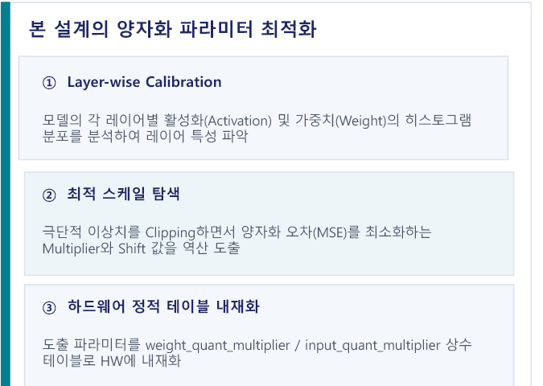

1. YOLOv2 정수 양자화
양자화는 두 detection head의 box와 class 출력을 유지하는 정수 데이터 경로이다. 대표 이미지에서 layer별 값의 범위를 수집하고, detector mAP로 scale 후보를 평가한다.
Calibration 구성
고정 seed 20260213으로 중복 없이 선택한 32장을 사용한다. 가까운 장면 16장과 먼 장면 16장은 두 detection head의 물체 크기 범위를 함께 포함한다. scale은 convolution layer별로 적용하며 channel별 양자화는 사용하지 않는다.
- 이미지
- 32장 · close 16 + long 16
- Seed
- 20260213
- Scale 단위
- Convolution layer별
- 평가 기준
- 두 head detector mAP
Calibration과 scale 탐색
calibration 이미지를 정수 모델에 통과시키며 layer별 activation과 weight 분포를 수집한다. 극단값 보존 범위와 saturation 범위는 정수 표현의 해상도에 영향을 준다. 분포는 scale 후보의 근거이며, detector mAP가 후보 평가 기준이다.

| Graph layer | Calibration index | Input multiplier | Weight multiplier |
|---|---|---|---|
| CONV00 | 0 | 127 | 21 |
| CONV10 | 5 | 14 | 745 |
| CONV14 · 8×8 head | 8 | 17 | 283 |
| CONV20 · 16×16 head | 10 | 5 | 511 |
위 값은 최종 scale 파일의 대표 layer입니다. 전체 layer에 하나의 전역 scale을 사용하지 않으며, multiplier 크기만으로 정확도를 판단하지 않는다.
정수 연산 데이터 경로
feature map과 weight는 8-bit로 저장하고, 여러 곱셈 결과가 더해지는 convolution accumulator는 32-bit를 사용한다. layer 출력은 bias와 활성화 뒤 고정소수점 multiplier와 shift를 거쳐 8-bit 범위로 변환된다.
ReLU 뒤 unsigned 8-bit
음수가 사라지는 backbone layer는 0~255 범위를 사용한다.
Signed 8-bit 출력
box와 class logit의 음수 값을 보존하기 위해 ReLU를 우회하고 −128~127 범위를 사용한다.
Requantization
INT32 누산 결과는 layer별 multiplier, round offset, 오른쪽 shift, signed·unsigned clamp를 거쳐 8-bit feature map으로 변환된다. 이 규칙은 DDR 저장 형식과 다음 layer 입력 형식을 유지한다.
CONV00 requantization 예시
최종 계수는 mul=1,006,507,
shift=28, round=0입니다.
18,432×1,006,507을 28-bit 오른쪽 shift하면 69가 되고,
unsigned clamp 뒤에도 69가 유지된다.
Layer별 rounding
CONV00은 round offset이 0이라 양수는 shift 과정에서 잘립니다. signed 음수는 절댓값을 shift한 뒤 부호를 복원하고 최종 범위로 제한한다.
정수 software reference 정확도
83.60%는 최종 정수 계수를 사용하는 software reference의 detector mAP이다. FPGA detector mAP 78.60%는 별도 실행 결과이며, float 모델과 정수 모델의 차이 및 정수 모델과 FPGA 실행의 차이를 구분하는 기준이다.
다음 문서는 정수 연산 규칙과 22개 descriptor, DDR workspace, 144-lane MAC의 연결을 다룬다.